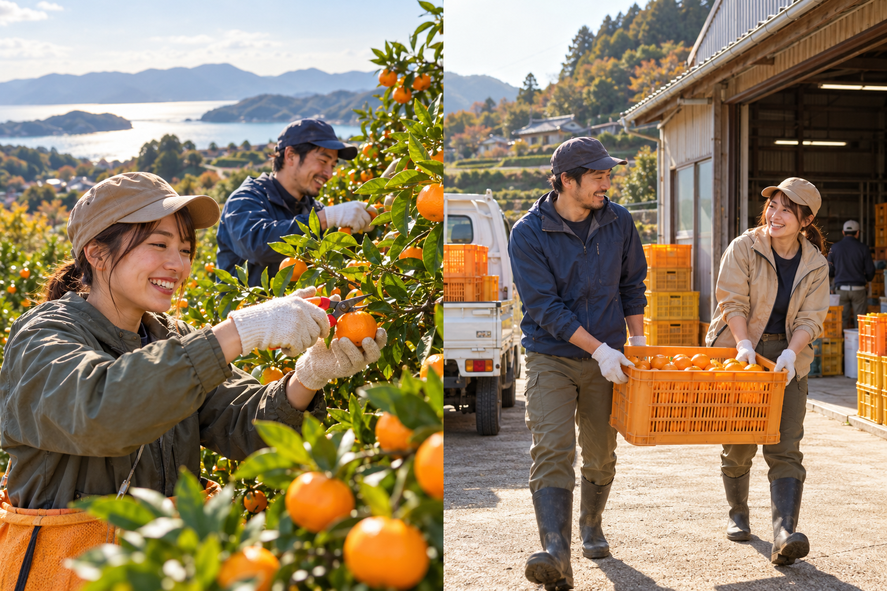
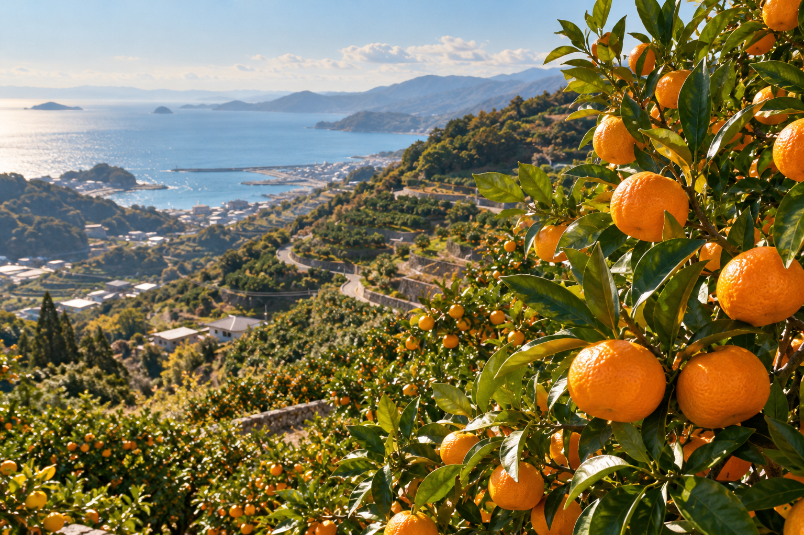

01✂HARVEST
ひとつずつ、みかんを採る。
葉の間からのぞく、まあるいみかん。農家さんに教わりながら、丁寧に収穫します。
WAKAYAMA, ARIDA
土にふれて、汗をかいて、みかんを囲む。
和歌山・有田で見つける、もうひとつの居場所。
農業を支える。人とつながる。自分に戻る。

01 — OUR STORY
平日は、街で。
週末は、みかん畑で。
和歌山・有田のみかん農家さんと一緒に、収穫をお手伝いする。そんな小さな一歩からはじまる、週末のコミュニティです。
みかんを採って、コンテナを運んで、休憩しながら話をする。農業を支える時間が、いつの間にか自分の楽しみにもなっていく。
家でも職場でもない、もうひとつの居場所を。
この畑で、一緒に育てていきませんか。
A LITTLE WORK, A LOT OF CONNECTION
はじめての方も、農家さんと一緒に。
それぞれのペースで、できることを。

01✂HARVEST
葉の間からのぞく、まあるいみかん。農家さんに教わりながら、丁寧に収穫します。
TEAMWORK
収穫したみかんを運び、倉庫でコンテナを下ろすまで。声をかけ合って進めます。
TAKE A BREAK
作業の合間は、のんびり休憩。何気ない会話も、ここで過ごす大切な時間です。
風景・収穫・運搬の写真は生成したイメージです。実際の農園・参加者の写真ではありません。
02 — A DAY IN THE ORCHARD
たっぷり働いて、心地よく帰る。
畑で過ごす半日のモデルスケジュール。
農家さんに採り方を教わって、収穫へ。
15時頃まで、みかんと向き合う時間。
15〜30分ほど休憩。水分をとって、ひと息。
後半も無理のないペースで。
17時頃までみかん採りとみかん運び。
みんなで協力しながら、収穫をつなぎます。
倉庫に戻ったら、みかんのコンテナを下ろすところまで。片付けを終えたら、その日の作業は終了です。
※ 時間は目安です。天候・収穫状況によって変更します。倉庫での荷下ろしを含む終了時刻は、開催時にご案内します。
03 — AROUND THE TOWN
温泉へ。おいしいものを探しに。海のそばへ。
少し寄り道すれば、週末はもっと豊かになる。
気になるピンをタップして、次の行き先を。
地元の味と、出会う。
地域の魅力にふれる道の駅へ。和歌山らしいお土産を探す時間も、旅の楽しみ。
地図・施設情報を見る ↗施設イメージのイラストです。実際の外観・設備とは異なります。
海のそばで、深呼吸。
もう少し海を楽しみたい日に。海辺の時間を、週末のプランに加えてみませんか。
地図・施設情報を見る ↗施設イメージのイラストです。実際の外観・設備とは異なります。
がんばった体に、ごほうび。
畑で体を動かしたあとは、温泉でほっとひと息。ゆったり過ごす寄り道に。
地図・施設情報を見る ↗施設イメージのイラストです。実際の外観・設備とは異なります。
※ 地図は位置関係を簡略化したイラストです。縮尺・距離・道路形状は正確ではありません。農園の所在地は未掲載です。移動には各施設の地図をご利用ください。
営業時間・料金・利用条件は、リンク先の最新情報をご確認ください。農園からの所要時間は開催時にご案内します。
04 — THE PLACE WE'RE GROWING
これから、育てていきたいこといつかは、みかん畑のそばにグランピングテントも。
農作業のあとにくつろいで、仲間と語り合って。
もう少し長く、ここにいたくなる場所へ。
農業を支えながら育む、みんなのセカンド・サードプレイス。完成形はまだ決めず、一緒につくっていきたいと思っています。
※ グランピング・宿泊は将来の構想です。現在は提供していません。
LET'S GROW TOGETHER
週末みかんは、ただいま立ち上げ準備中。
農家さんと一緒に、最初の一歩を育てています。
開催日・集合場所・参加費・持ち物・参加条件は決まり次第掲載します。
参加受付はまだ開始していません。
斜面での作業やコンテナの運搬があります。作業内容・体力面に不安がある方が事前に相談できる窓口も準備中です。雨天時の対応、服装、保険、謝礼などの条件は開催案内でお知らせします。